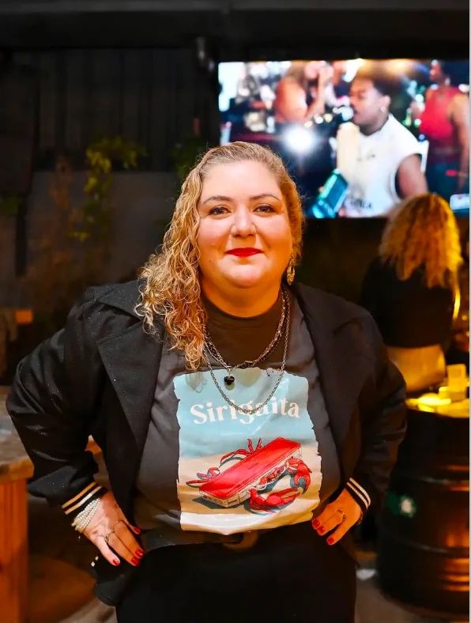
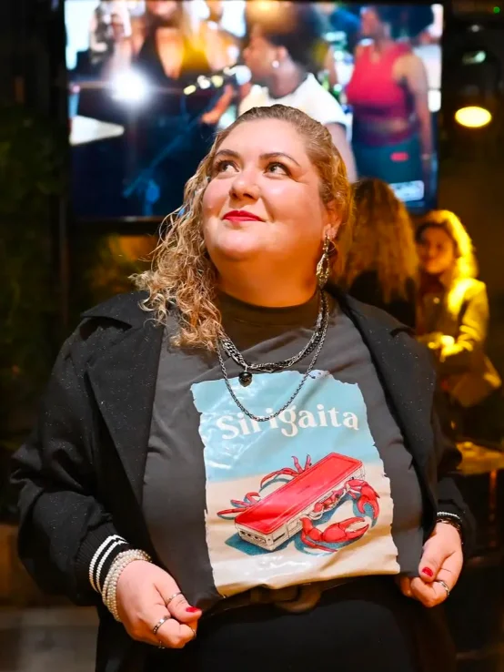

Um espaço de escuta e acolhimento para você se reencontrar. O processo terapêutico é um caminho — e você não precisa percorrê-lo sozinho.


Sou a Gabriela — psicóloga clínica em Pelotas/RS. Acredito que ninguém atravessa sozinho os momentos de virada: lutos, recomeços, mudanças de rota, a sensação de estar travado. Meu trabalho é oferecer um espaço seguro onde a sua história possa ser dita — e ouvida — sem pressa e sem julgamento.
Atendo adultos em processo terapêutico individual, presencial e online, com uma prática acolhedora e comprometida com o seu ritmo.
"Terapia não é sobre ter todas as respostas — é sobre ter um lugar para as suas perguntas."
Psicoterapia para adultos, no seu ritmo, com escuta atenta e plano terapêutico próprio.
Quero saber mais →Suporte em transições de vida: separações, mudanças, luto, novas fases.
Quero saber mais →Um espaço que entende a rotina, a pressão e a sensibilidade de quem cria.
Quero saber mais →Sessões por vídeo com a mesma qualidade e sigilo do presencial, em todo o Brasil.
Quero saber mais →Atendimento presencial em Pelotas/RS e online para todo o Brasil.
Sua história é acolhida como ela é — sem rótulos, sem pressa.
Tudo o que é dito em sessão fica em sessão. Ética profissional sempre.
A técnica importa, mas o vínculo vem primeiro. Você no centro do processo.
Consultório em Pelotas/RS ou sessão por vídeo — você escolhe o formato.
Avaliações reais publicadas no Google · ★ 5,0
Av. Rio Grande do Sul, 629 — Laranjal
Pelotas/RS · CEP 96090-590
A primeira sessão é um espaço de acolhimento e escuta: você conta o que te trouxe até aqui, no seu tempo, e juntas entendemos o melhor caminho para o seu processo. Não existe jeito certo de começar — chegar já é o começo.
Sim. O sigilo é um princípio ético da psicologia e um compromisso meu com você. Tudo o que é compartilhado em sessão é confidencial, conforme o Código de Ética Profissional do Psicólogo.
Os dois formatos têm a mesma qualidade e o mesmo sigilo. O presencial acontece no consultório em Pelotas/RS; o online, por vídeo, de onde você estiver. Muita gente combina os dois — a escolha é sua e pode mudar ao longo do processo.
Não existe prazo fixo: cada pessoa tem seu ritmo e seus objetivos. Algumas questões se organizam em poucos meses; outras pedem um acompanhamento mais longo. Avaliamos isso juntas, com transparência, ao longo do caminho.
Em geral, as sessões são semanais, com cerca de 50 minutos — a regularidade é parte importante do processo. Frequências diferentes podem ser combinadas conforme a sua necessidade e momento.
Se algo dentro de você está pedindo cuidado, escuta ou um recomeço — me manda uma mensagem. A gente conversa sem compromisso.
Agendar pelo WhatsApp